07/2024 - present
HTML Workshop Facilitator
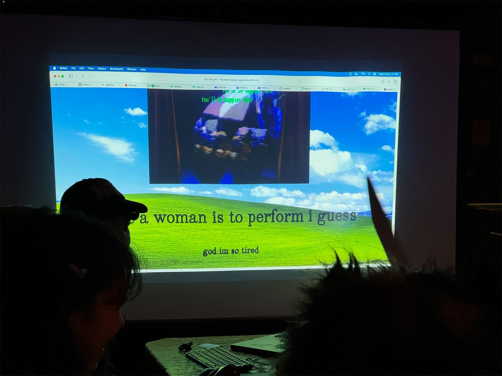
Co-hosted beginner-friendly coding workshops under the collective Cranberry Lemonade, demystifying web development and encouraging participants to personalise their projects, expressing the idea of personalised web.
Workshop Facilitators: Yunzhi/Melissa Li, Rizq Yazed, Phoenix Kea
Workshops took place in various venues such as SET Social(monthly), Peckham Pelican (HTML energy 2024 London Hosts), The Good Rice (Big Mixer Exhibtion)
Skills Displayed: Workshop planning and hosting, Web Development, Coding (HTML, CSS, Javascript)
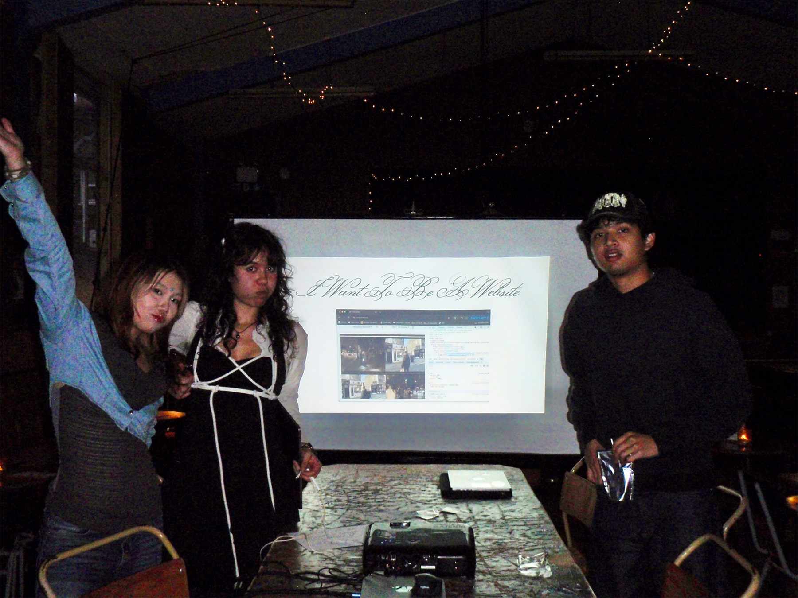
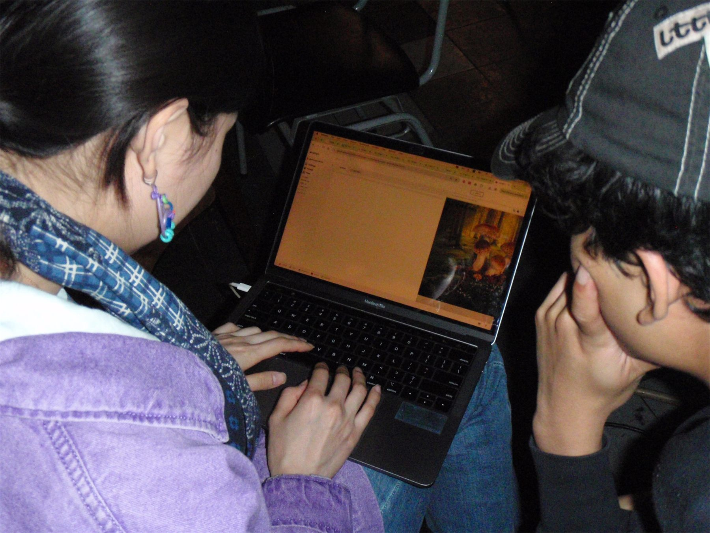
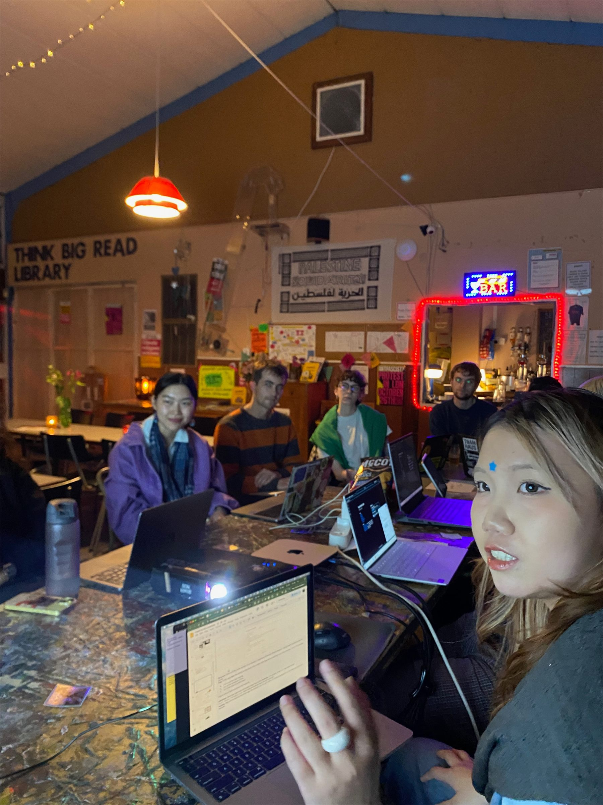
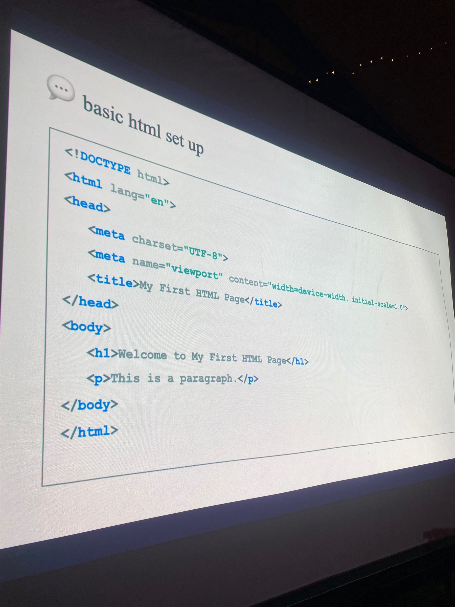
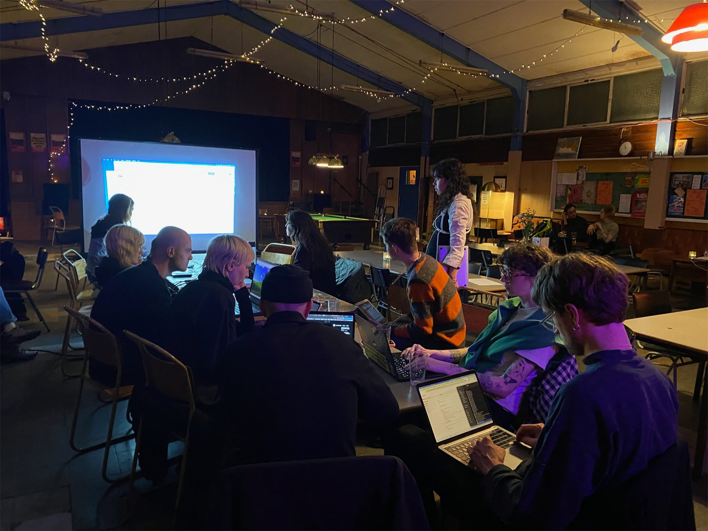
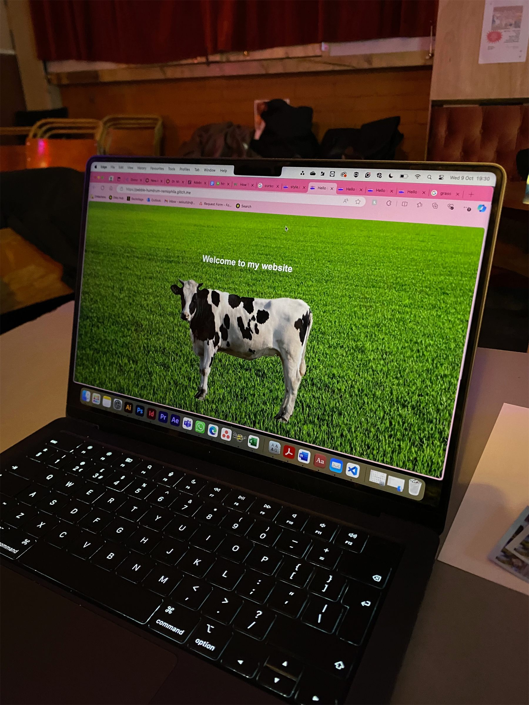
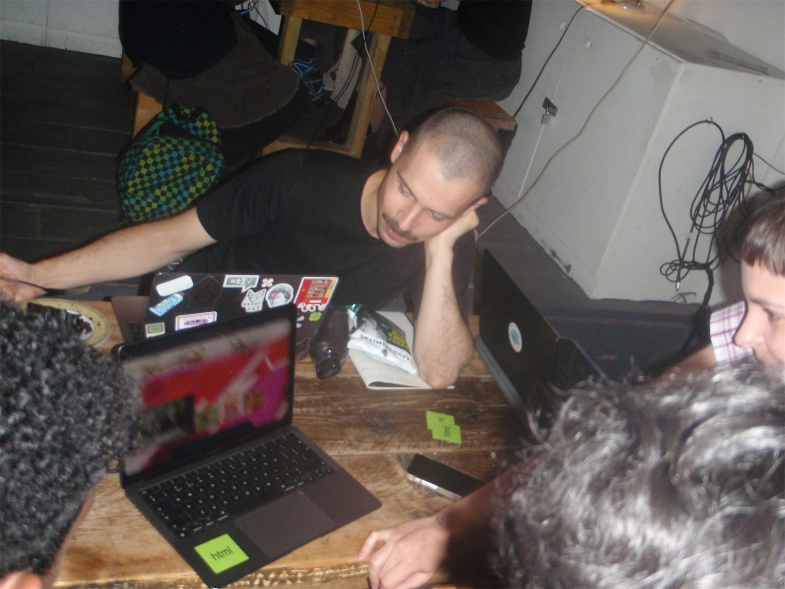
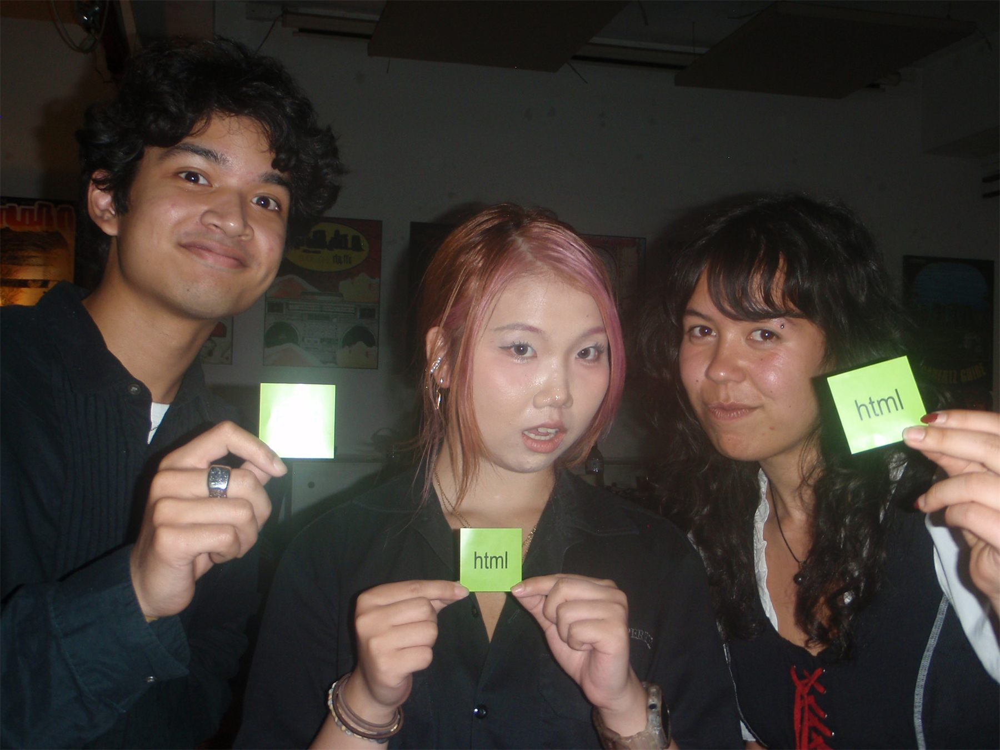
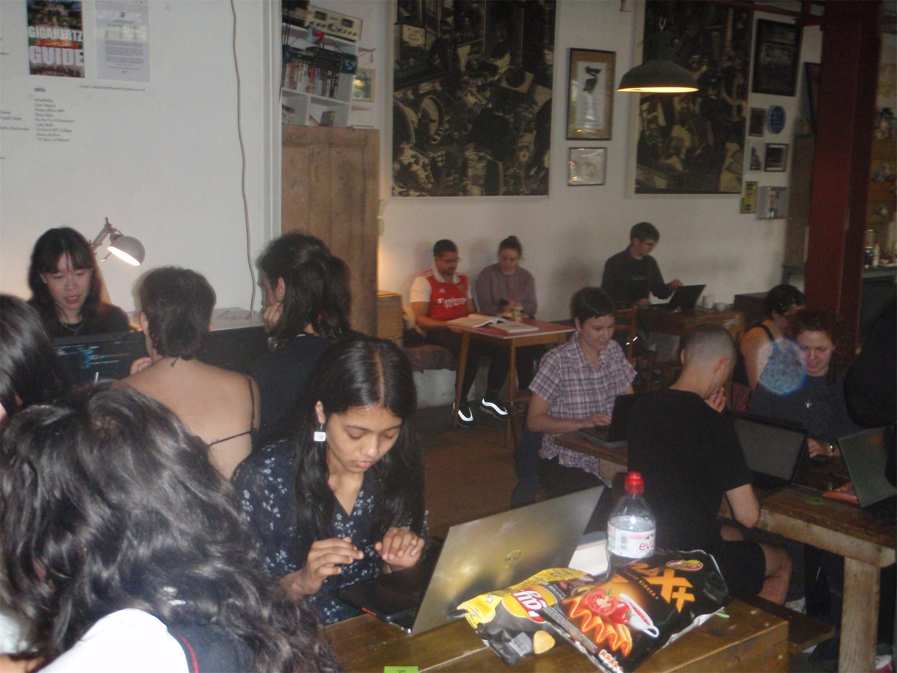
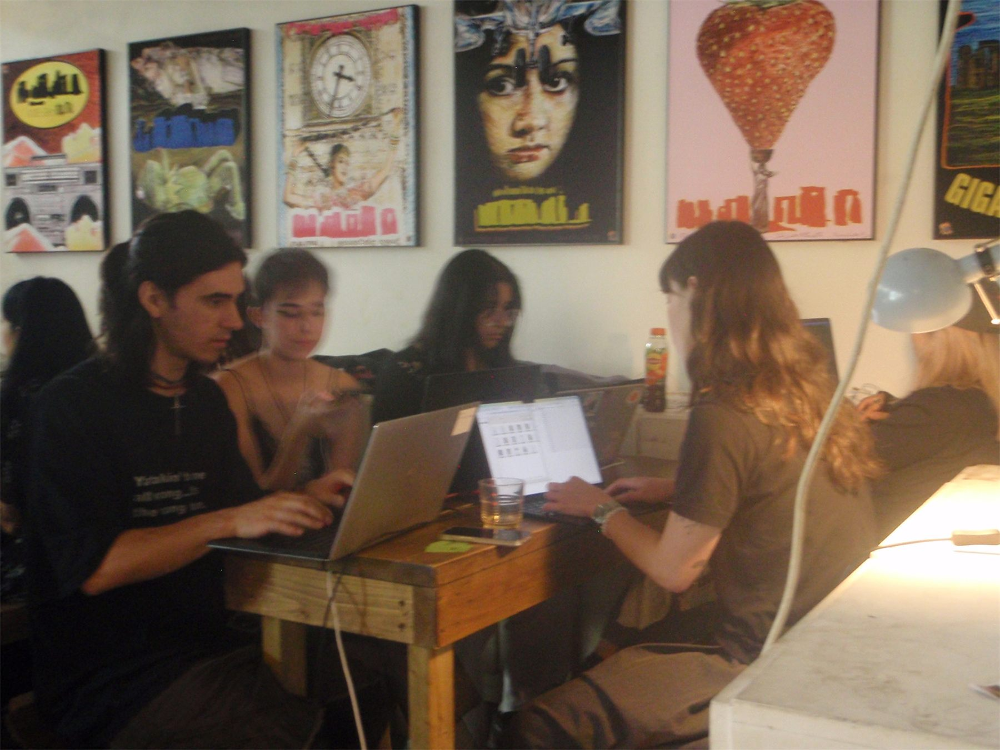
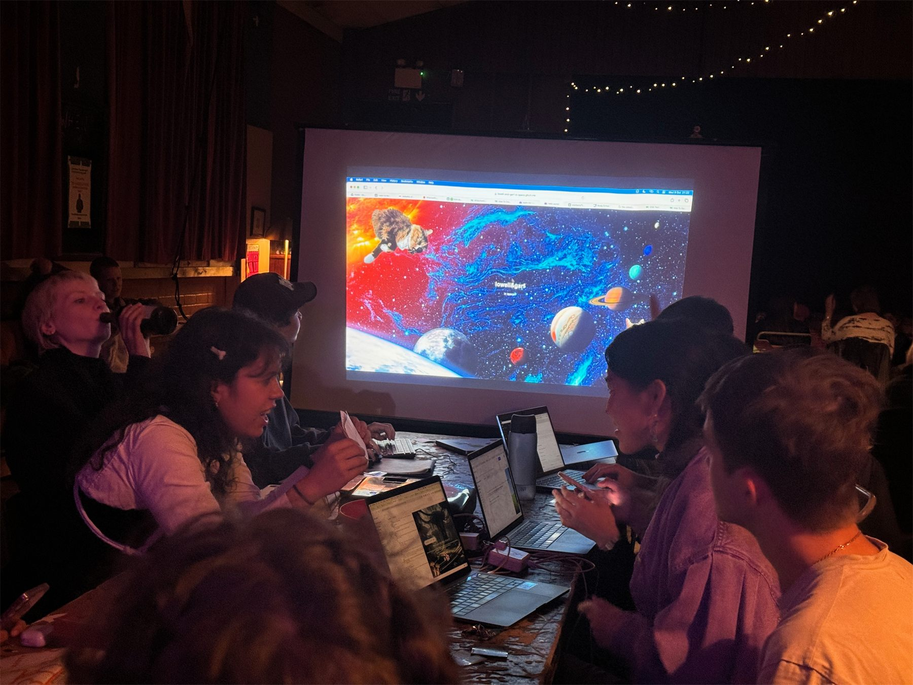
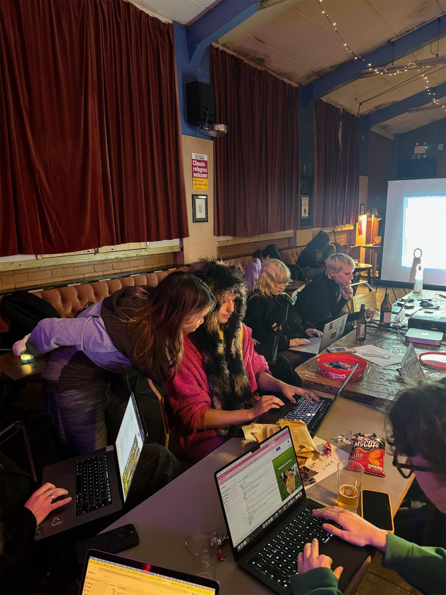
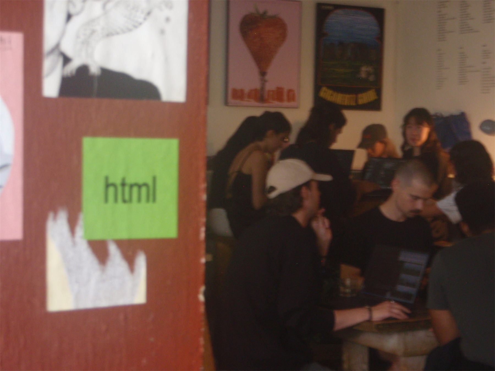